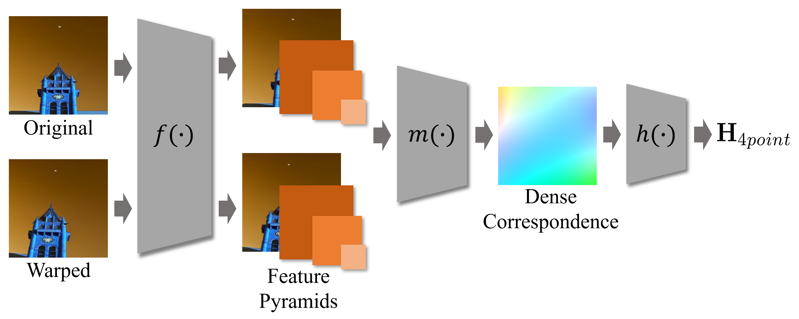

Xiaohang (Joshua) Yang
Intern Resercher
3DNR Group, Autonomous Driving Group, Shanghai AI Lab, Shanghai
Office: L1-12F-C, Shanghai AI Lab
I study neural representation of 3D dynamic scenes. I am also interested in video processing and perception, including frame interpolation, action recognition, and optical flow estimation.
I recently completed my master degree from Shanghai Jiao Tong University. Before that, I’ve joined 3DNR Group, Shanghai AI Lab, as an intern researcher to build a full-scene reconstruction platform for autonomous driving simulation and testing.
News
| Sep 30, 2022 |
Homepage rebuilt. |
|---|
Education
| 2019 - 2022 | M.S. in Control Science and Engineering, Shanghai Jiao Tong University |
|---|---|
| 2015 - 2019 | B.S. in Automation, Shanghai Jiao Tong University |
Work Experience
| Nov 2021 - Present | Research Intern, 3D Neural Rendering Group, Autonomous Driving Group, Shanghai AI Lab. |
|---|---|
| Sep 2019 - Jun 2022 | Research Assistant, Institute of Image Processing and Pattern Recognition, Shanghai Jiao Tong University, supervised by Prof. Jie Yang. |
Publications
-
Graduate ThesisEfficient Frame Interpolation AlgorithmMaster Degree Thesis (Graduate Thesis) , 2022
-
ICASSPUnsupervised Motion Representation Enhanced Network for Action RecognitionInternational Conference on Acoustics, Speech and Signal Processing (ICASSP) , 2021
-
ICASSPOas-net: Occlusion aware sampling network for accurate optical flowInternational Conference on Acoustics, Speech and Signal Processing (ICASSP) , 2021
-
 arXiv